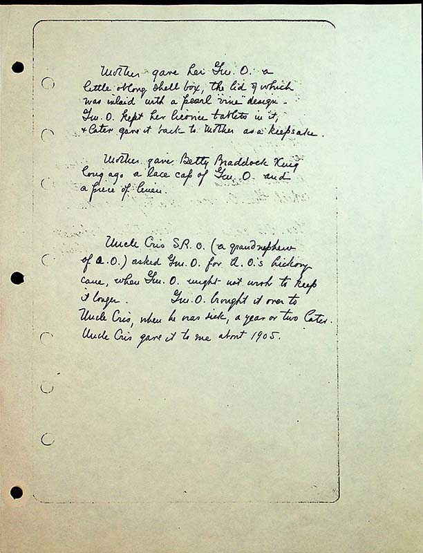

Mother gave her Gm.O. a little oblong shell box, the lid of which was inlaid with a pear vine design. Gm.O. [Grandmother Overholt kept her licorice tablets in it, & ater gave it back to mother as a keepsake.
Mother gave Betty Braddock king long ago a lace cap of Gm.O. and a piece of linen.
Uncle Cris SR O (a grandnephew of AO) asked Gm. O. for Gf.O’s [Grandfather Overholt’s] hickory cane, when Gm.O. might not wish to keep it longer. Gm.O. brought it over to Uncle Chris, when he was sick, a year or two later. Uncle Chris gave it to me about 1905.